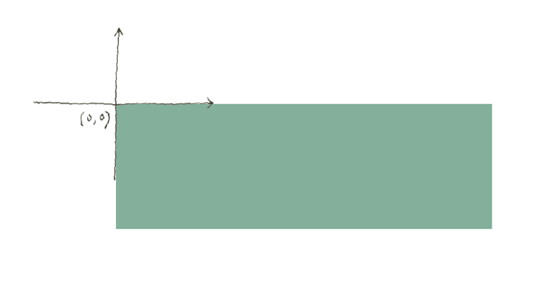
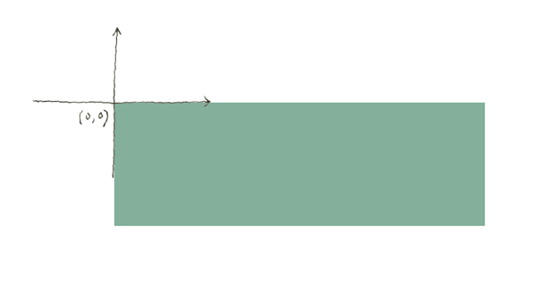

1. Draw a happy face, then draw two
First, let's draw a happy face like we did in LA 1.3. The only difference is here we are using the translate function to place it where we want, like we learned in LA 2.5.
Now let's draw a second one. You can copy and paste the chunk of code that you used for the first happy face and change the parameters for the translate function to locate it next to the first one.
You can imagine the code getting longer and longer very fast as we draw a third, a tenth, a hundredth happy face. Now imagine after making all these copies you decide to change the color of the face, or make the eyes bigger. That means making the same change three, ten, a hundred times. When we have repeated code, it becomes more likely that we make mistakes, and it is harder to find them.
2. Write a happy-face-drawing function
Wouldn't it be great if we could just give these lines of code a name, like "drawHappyFace", and then we could just call that name many times? Our code would look something like this:
- tell our program that 'drawHappyFace' refers to all those lines of code that draw the face, then:
- drawHappyFace;
- drawHappyFace;
This is exactly what a function does. We have encountered functions before. We have called pre-existing ones (ellipse is a function, random is a function), and we have even re-defined some p5 functions (draw(), setup(), and mouseDragged() are functions). But we can also write our own from scratch, and give them any name we want. Let's define a drawHappyFace function, and paste our existing face-drawing code in it:
function drawHappyFace(){
translate(300, 100);
//Face
fill(249,205,173);//rosy beige
ellipse(0, 0, 100, 100);
//Eye 1
fill(30);//dark gray
ellipse(0, 10, 10, 10);
//Eye 2
ellipse(20, 10, 10, 10);
//Mouth
fill(252,157,154);//light pink
arc(0, 25, 30, 30, 0, radians(180), PIE);
}
Notice the syntax: to declare a function, we use the keyword function, then give it a name, then write () (more on these later). We then write the code, surrounded by { }.
Now we just need to add a call to our function to the draw loop:
drawHappyFace();
The only problem with this function is it always draws the happy face in the same position. We want to be able to tell it to draw the second one 110 pixels to the right.
Rather than calling drawHappyFace(), we want to send x and y values for each face we draw ––just like we do when calling ellipse or rect:
drawHappyFace(300, 200);
drawHappyFace(410, 200);
We can do so by adding
parameters to our function definition, like so:
function drawHappyFace(x, y){ ... }. Then, in the function body, before drawing, we translate to that position:
translate(x, y). Take a look at the function code:
function drawHappyFace(x, y){
push();
translate(x, y);
//Face
fill(249,205,173);//rosy beige
ellipse(0, 0, 100, 100);
//Eye 1
fill(30);//dark gray
ellipse(0, 10, 10, 10);
//Eye 2
ellipse(20, 10, 10, 10);
//Mouth
fill(252,157,154);//light pink
arc(0, 25, 30, 30, 0, radians(180), PIE);
pop();
}
Parameters work just like variables: when drawHappyFace is called the first time, x will be replaced by the number 300, and y by 200. The second time it is called, x will be 410, and y will be 200.
Notice that, in our function, we also added push and pop to isolate the effect of the translate function (see LA2.5, step 10):
 

Here is the complete code: